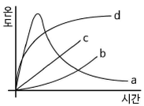
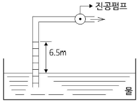
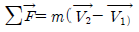
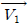
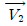
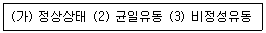
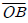
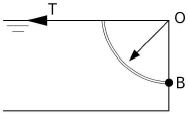
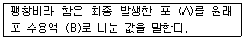

소방설비기사(기계분야) (2015-03-08 기출문제)
1과목: 소방원론
1. 위험물안전관리법상 제4류 위험물인 알코올류에 속하지 않는 것은?
- C2H5OH
- C4H9OH
- CH3OH
- C3H7OH
(정답률: 56%)

2. 이산화탄소의 증기비중은 약 얼마인가?
- 0.81
- 1.52
- 2.02
- 2.51
(정답률: 74%)
3. 화재 시 불티가 바람에 날리거나 상승하는 열기류에 휩쓸려 멀리 있는 가연물에 착화되는 현상은?
- 비화
- 전도
- 대류
- 복사
(정답률: 74%)
4. 할로겐화합물 소화약제에 관한 설명으로 틀린 것은?
- 비열, 기화열이 작기 때문에 냉각효과는 물보다 작다.
- 할로겐 원자는 활성기의 생성을 억제하여 연쇄반응을 차단한다.
- 사용 후에도 화재현장을 오염시키지 않기 때문에 통신기기실 등에 적합하다.
- 약제의 분자 중에 포함되어 있는 할로겐 원자의 소화효과는 F > Cl > Br > I 순이다.
(정답률: 68%)
5. 불활성가스 청정소화약제인 IG-541의 성분이 아닌 것은?
- 질소
- 아르곤
- 헬륨
- 이산화탄소
(정답률: 62%)
6. 벤젠의 소화에 필요한 CO2의 이론소화농도가 공기 중에서 37 vol% 일 때 한계산소농도는 몇 vol% 인가?
- 13.2
- 14.5
- 15.5
- 16.5
(정답률: 52%)
7. 소방안전관리대상물에 대한 소방안전관리자의 업무가 아닌 것은?
- 소방계획서의 작성
- 자위소방대의 구성
- 소방훈련 및 교육
- 소방용수시설의 지정
(정답률: 67%)
8. 착화에너지가 충분하지 않아 가연물이 발화되지 못하고 다량의 연기가 발생되는 연소형태는?
- 훈소
- 표면연소
- 분해연소
- 증발연소
(정답률: 78%)
9. 가연성 액화가스의 용기가 과열로 파손되어 가스가 분출된 후 불이 붙어 폭발하는 현상은?
- 블레비(BLEVE)
- 보일오버(Boil over)
- 슬롭오버(Slop over)
- 플래시오버(Flash over)
(정답률: 67%)
10. 그림에서 내화조 건물의 표준 화재 온도-시간 곡선은?

- a
- b
- c
- d
(정답률: 65%)
11. 할로겐화합물 소화약제의 분자식이 틀린 것은?
- 할론 2402 : C2F4Br2
- 할론 1211 : CCl2FBr
- 할론 1301 : CF3Br
- 할론 104 : CCl4
(정답률: 73%)
12. 간이소화용구에 해당되지 않는 것은?
- 이산화탄소소화기
- 마른모래
- 팽창질석
- 팽창진주암
(정답률: 72%)
13. 건축물의 주요 구조부에 해당되지 않는 것은?
- 기둥
- 작은 보
- 지붕틀
- 바닥
(정답률: 69%)
14. 축압식 분말소화기의 충진압력이 정상인 것은?
- 지시압력계의 지침이 노란색부분을 가리키면 정상이다.
- 지시압력계의 지침이 흰색부분을 가리키면 정상이다.
- 지시압력계의 지침이 빨간색부분을 가리키면 정상이다.
- 지시압력계의 지침이 녹색부분을 가리키면 정상이다.
(정답률: 78%)
15. 가연물이 되기 쉬운 조건이 아닌 것은?
- 발열량이 커야 한다.
- 열전도율이 커야 한다.
- 산소와 친화력이 좋아야 한다.
- 활성화에너지가 작아야 한다.
(정답률: 70%)
16. 위험물안전관리법상 옥외 탱크저장소에 설치하는 방유제의 면적기준으로 옳은 것은?
- 30000m2 이하
- 50000m2 이하
- 80000m2 이하
- 100000m2 이하
(정답률: 67%)
17. 유류탱크 화재 시 발생하는 슬롭오버(Slop over) 현상에 관한 설명으로 틀린 것은?
- 소화 시 외부에서 방사하는 포에 의해 발생한다.
- 연소유가 비산되어 탱크 외부지 화재가 확산된다.
- 탱크의 바닥에 고인 물의 비등 팽창에 의해 발생 한다.
- 연소면의 온도가 100℃ 이상일 때 물을 주수하면 발생한다.
(정답률: 62%)
18. 마그네슘에 관한 설명으로 옳지 않은 것은?
- 마그네슘의 지정수량은 500kg이다.
- 마그네슘 화재 시 주수하면 폭발이 일어날 수도 있다.
- 마그네슘 화재 시 이산화탄소 소화약제를 사용하여 소화한다.
- 마그네슘의 저장·취급 시 산화제와의 접촉을 피한다.
(정답률: 55%)
19. 가연성물질별 소화에 필요한 이산화탄소 소화약제의 설계농도로 틀린 것은?
- 메탄 : 34 vol%
- 천연가스 : 37 vol%
- 에틸렌 : 49 vol%
- 아세틸렌 : 53 vol%
(정답률: 50%)
20. 부촉매소화에 관한 설명으로 옳은 것은?
- 산소의 농도를 낮추어 소화하는 방법이다.
- 화학반응으로 발생한 탄산가스에 의한 소화방법이다.
- 활성기(Free radical)의 생성을 억제하는 소화방법이다.
- 용융잠열에 의한 냉각효과를 이용하여 소화하는 방법이다.
(정답률: 72%)
2과목: 소방유체역학
21. 온도 50℃, 압력 100 kPa인 공기가 지름 10㎜인 관속을 흐르고 있다. 임계 레이놀즈수가 2100일 때 층류를 흐를 수 있는 최대평균속도(V)와 유량(Q)은 각각 약 얼마인가? (단, 공기의 점성계수는 19.5 ×10-6㎏/m·s이며, 기체상수는 287 J/㎏·K 이다.)
- V = 0.6m/s, Q = 0.5×104m3/s
- V = 1.9m/s, Q = 1.5×4m3/s
- V = 3.8m/s, Q = 3.0×4m3/s
- V = 5.8m/s, Q = 6.1×4m3/s
(정답률: 55%)
22. 수직유리관 속의 물기둥의 높이를 측정하여 압력을 측정할 때, 모세관현상에 의한 영향이 0.5mm 이하가 되도록 하려면 관의 반경은 최소 몇 mm가 되어야 하는가? (단, 물의 표면장력은 0.0728N/m, 물-유리-공기 조합에 대한 접촉각은 0° 로 한다.)
- 2.97
- 5.94
- 29.7
- 59.4
(정답률: 27%)
23. 노즐의 계기압력 400 kPa로 방사되는 옥내소화전에서 저수조의 수량이 10m3이라면 저수조의 물이 전부 소비되는데 걸리는 시간은 약 몇 분 인가? (단, 노즐의 직경은 10mm이다.)
- 75
- 95
- 150
- 180
(정답률: 45%)
24. 고속주행시 타이어의 온도가 20℃에서 80℃로 상승하였다. 타이어의 체적이 변화하지 않고, 타이어 내의 공기를 이상 기체를 하였을 때 압력 상승은 약 몇 kPa 인가? (단, 온도 20℃에서 의 게이지압력은 0.183MPa, 대기압은 101.3kPa이다.)
- 37
- 58
- 286
- 345
(정답률: 29%)
25. 관내의 흐름에서 부차적 손실에 해당되지 않는 것은?
- 곡선부에 의한 손실
- 직선 원관 내의 손실
- 유동단면의 장애물에 의한 손실
- 관 단면의 급격한 확대에 의한 손실
(정답률: 68%)
26. 표준대기압에서 진공압이 400mmHg일 때 절대 압력은 약 몇 Kpa 인가? (단, 표준대기압은 101.3 Kpa, 수은의 비중은 13.6이다.)
- 48
- 53
- 149
- 154
(정답률: 43%)
27. 타원형 단면의 금속관이 팽창하는 원리를 이용하는 압력 측정장치는?
- 액주계
- 수은기압계
- 경사미압계
- 부르돈압력계
(정답률: 68%)
28. 그림과 같이 물이 담겨있는 어느 용기에 진공펌프가 연결된 파이프를 세워 두고 펌프를 작동시켰더니 파이프 속의 물이 6.5m까지 올라갔다. 물기둥 윗부분의 공기압은 절대압력으로 몇 kPa 인가? (단, 대기압은 101.3 kPa이다.)

- 37.6
- 47.6
- 57.6
- 67.6
(정답률: 52%)
29. 펌프 운전 중에 펌프 입구와 출구에 설치된 진공계, 압력계의 지침이 흔들리고 동시에 토출 유량이 변화하는 현상으로 송출압력과 송출유량 사이에 주기적인 변동이 일어나는 현상은?
- 수격현상
- 서징현상
- 공동현상
- 와류현상
(정답률: 63%)
30. 단순화된 선형운동량 방정식

이 성립되기 위하여 [보기] 중 꼭 필요한 조건을 모두 고른 것은? (단, m은 질량유량,
는 검사체적 입구평균속도,
는 출구평균속도이다.)(오류 신고가 접수된 문제입니다. 반드시 정답과 해설을 확인하시기 바랍니다.)
- (가)
- (가), (나)
- (나), (다)
- (가), (나), (다)
(정답률: 56%)
31. 펌프에서 기계효율이 0.8, 수력효율이 0.85, 체적효율이 0.75인 경우 전효율은 얼마인가?
- 0.51
- 0.68
- 0.8
- 0.9
(정답률: 53%)
32. 단면이 1m2인 단열 물체를 통해서 5㎾의 열이 전도되고 있다. 이 물체의 두께는 5cm이고 열전도도는 0.3W/m℃이다. 이 물체 양면의 온도차는 몇 ℃인가?
- 35
- 237
- 506
- 833
(정답률: 52%)
33. 500mm×500mm인 4각관과 원형관을 연결하여 유체를 흘려보낼 때, 원형관내 유속이 4각관내 유속의 2배가 되려면 관의 지름을 약 몇 cm로 하여야 하는가?
- 37.14
- 38.12
- 39.89
- 41.32
(정답률: 45%)
34. 지름이 10cm인 실린더 속에 유체가 흐르고 있다. 벽면으로부터 가까운 곳에서 수직거리가 0[m]인 위치에서 속도가 u =5y-y2[m/s]로 표시된다면 벽면에서의 마찰전단 응력은 몇 Pa 인가? (단, 유체의 점성계수 u =3.82×10-2N·s/m2)
- 0.191
- 0.38
- 1.95
- 3.82
(정답률: 42%)
35. 이상기체의 운동에 대한 설명으로 옳은 것은?
- 분자 사이에 인력이 항상 작용한다.
- 분자 사이에 척력이 항상 작용한다.
- 분자가 충돌할 때 에너지의 손실이 있다.
- 분자 자신의 체적은 거의 무시할 수 있다.
(정답률: 62%)
36. 두 물체를 접촉시켰더니 잠시 후 두 물체가 열평형 상태에 도달하였다. 이 열평형 상태는 무엇을 의미 하는가?
- 두 물체의 비열은 다르나 열용량이 서로 같아진 상태
- 두 물체의 열용량은 다르나 비열이 서로 같아진 상태
- 두 물체의 온도가 서로 같으며 더 이상 변화하지 않는 상태
- 한 물체에서 잃은 열량이 다른 물체에서 얻은 열량과 같은 상태
(정답률: 64%)
37. 길이 100m, 직경 50mm인 상대조도 0.01인 원형 수도관 내에 물이 흐르고 있다. 관내 평균유속이 2m/s에서 4m/s로 2배 증가하였다면 압력 손실은 몇 배로 되겠는가? (단, 유동은 마찰계수가 일정한 완전난류로 가정한다.)
- 1.41배
- 2배
- 4배
- 8배
(정답률: 51%)
38. 물의 유속을 측정하기 위해 피토관을 사용하였다. 동압이 60mmHg이면 유속은 약 몇 m/s 인가? (단, 수은의 비중은 13.6이다.)
- 2.7
- 3.5
- 3.7
- 4.0
(정답률: 45%)
39. 그림에서 물에 의하여 점 B에서 힌지된 사분원모양의 수운이 평형을 유지하기 위하여 잡아 당겨야 하는 힘 T는 몇 kN인가? (단, 폭은 1m, 반지름(r=

)은 2m, 4분원의 중심은 0점에서 왼쪽으로 4r/3π인 곳에 있으며 물의 밀도는 1000kg/m3이다.)
- 1.96
- 9.8
- 19.6
- 29.4
(정답률: 49%)
40. 관내에서 물이 평균속도 9.8m/s로 흐를 때의 속도 수두는 몇 m인가?
- 4.9
- 9.8
- 48
- 128
(정답률: 65%)
3과목: 소방관계법규
41. 하자를 보수하여야 하는 소방시설에 따른 하자보수 보증기간의 연결이 옳은 것은?
- 무선통신보조설비 : 3년
- 상수도소화용수설비 : 3년
- 피난기구 : 3년
- 자동화재탐지설비 : 2년
(정답률: 62%)
42. 소방시설관리사 시험을 시행하고자 하는 때에는 응시자격 등 필요한 사항을 시험 시행일 며칠전까지 일간신문에 공고하여야 하는가?
- 15
- 30
- 60
- 90
(정답률: 57%)
43. 무창층 여부 판단 시 개구부 요건기준으로 옳은 것은?
- 해당 층의 바닥면으로부터 개구부 밑부분까지의 높이가 1.5m이내일 것
- 개구부의 크기가 지름 50cm 이상의 원이 내접할 수 있을 것
- 개구부의 도로 또는 차량이 진입할 수 없는 빈터를 향할 것
- 내부 또는 외부에서 쉽게 파괴 또는 개방할 수 없을 것
(정답률: 59%)
44. 아파트로서 층수가 20층인 특정소방대상물에는 몇 층 이상의 층의 스프링클러설비를 설치해야 하는가?(관련 규정 개정전 문제로 여기서는 기존 정답인 4번을 누르면 정답 처리됩니다. 자세한 내용은 해설을 참고하세요.)
- 6층
- 11층
- 16층
- 전층
(정답률: 67%)
45. 1급 소방안전관리 대상물에 해당하는 건축물은?
- 연면적 15000m2 이상인 동물원
- 층수가 15층인 업무시설
- 층수가 20층인 아파트
- 지하구
(정답률: 54%)
46. 소방력의 기준에 따라 관할구역 안의 소방력을 확충하기 위한 필요 계획을 수립하여 시행하는 사람은?
- 소방서장
- 소방본부장
- 시·도지사
- 자치소방대장
(정답률: 64%)
47. 위험물안전관리법령에서 규정하는 제3류 위험물의 품명에 속하는 것은?
- 나트륨
- 염소산염류
- 무기과산화물
- 유기과산화물
(정답률: 60%)
48. 소방공사업자가 소방시설공사를 마친 때에는 완공검사를 받아야하는데 완공검사를 위한 현장 확인을 할 수 있는 특정 소방대상물의 범위에 속하지 않는 것은?
- 문화 및 집회시설
- 노유자시설
- 지하상가
- 의료시설
(정답률: 45%)
49. 제조소 등의 위치·구조 또는 설비의 변경 없이 당해 제조소 등에서 저장하거나 취급하는 위험물의 품명·수량 또는 지정수량의 배수를 변경하고자 할 때는 누구에게 신고해야 하는가?
- 국무총리
- 시·도지사
- 국민안전처장관
- 관할소방서장
(정답률: 63%)
50. 위험물안전관리법령에 의하여 자체소방대에 배치해야 하는 화학소방자동차의 구분에 속하지 않는 것은?
- 포수용액 방사차
- 고가 사다리차
- 제독차
- 할로겐화합물 방사차
(정답률: 65%)
51. 제4류 위험물을 저장하는 위험물제조소의 주의사항을 표시한 게시판의 내용으로 적합한 것은?
- 화기엄금
- 물기엄금
- 화기주의
- 물기주의
(정답률: 68%)
52. 다음의 위험물 중에서 위험물안전관리법령에서 정하고 있는 지정수량이 가장 적은 것은?
- 브롬산염류
- 유황
- 알칼리토금속
- 과염소산
(정답률: 41%)
53. 관계인이 예방규정을 정하여야 하는 옥외저장소는 지정수량의 몇 배 이상의 위험물을 저장하는 것을 말하는가?
- 10
- 100
- 150
- 200
(정답률: 56%)
54. 소방대장은 화재, 재난·재해, 그 밖의 위험한 상황이 발생한 현장에 소방활동구역을 정하여 지정한 사람 외에는 그 구역에 출입하는 것을 제한할 수 있다. 소방활동구역을 출입할 수 없는 사람은?
- 의사·간호사 그 밖의 구조·구급업무에 종사하는 사람
- 수사업무에 종사하는 사람
- 소방활동구역 밖의 소방대상물을 소유한 사람
- 전기·가스 등의 업무에 종사하는 사람으로서 원활한 소방활동을 위하여 필요한 사람
(정답률: 71%)
55. 소방기본법에서 규정하는 소방용수시설에 대한 설명으로 틀린 것은?
- 시·도지사는 소방활동에 필요한 소화전·급수탑·저수조를 설치하고 유지·관리하여야 한다.
- 소방본부장 또는 소방서장은 원활한 소방활동을 위하여 소방용수시설에 대한 조사를 월 1회 이상 실시하여야 한다.
- 소방용수시설 조사의 결과는 2년간 보관하여야 한다.
- 수도법의 규정에 따라 설치된 소화전도 시·도지사가 유지·관리해야 한다.
(정답률: 61%)
56. 피난시설, 방화구획 및 방화시설을 폐쇄·훼손· 변경 등의 행위를 3차 이상 위반한 자에 대한 과태료는?(관련 규정 개정으로 기존 정답은 1번입니다. 여기서는 기존 정답 1번을 누르면 정답 처리 됩니다. 자세한 내용은 해설을 참고하세요.)
- 2백만원
- 3백만원
- 5백만원
- 1천만원
(정답률: 54%)
57. 소방시설을 등록할 수 있는 사람은?
- 한정치산자
- 소방기본법에 따른 금고 이상의 실형을 선고 받고 그 집행이 종료된 후 1년이 경과한 사람
- 위험물안전관리법에 따른 금고 이상의 형의 집행 유예를 선고받고 그 유예기간 중에 있는 사람
- 등록하려는 소방시설업 등록이 취소된 날부터 2년이 경과한 사람
(정답률: 69%)
58. 소방시설 설치·유지 및 안전관리에 관한 법률에서 규정하는 소방용품 중 경보설비를 구성하는 제품 또는 기기에 해당하지 않는 것은?
- 비상조명등
- 누전경보기
- 발신기
- 감지기
(정답률: 67%)
59. 다음 소방시설 중 소화활동설비가 아닌 것은?
- 제연설비
- 연결송수관설비
- 무선통신보조설비
- 자동화재탐지설비
(정답률: 61%)
60. 소방특별조사 결과 화재예방을 위하여 필요한 때 관계인에게 소방대상물의 개수·이전·제거, 사용의 금지 또는 제한 등의 필요한 조치를 명할 수 있는 사람이 아닌 것은?(관련 규정이 개정되었습니다. 기존 정답은 3번이며 여기서는 3번을 누르면 정답 처리 됩니다. 자세한 내용은 해설을 참고 하세요.)
- 소방서장
- 소방본부장
- 국민안전처장관
- 시·도지사
(정답률: 59%)
4과목: 소방기계시설의 구조 및 원리
61. 스프링클러헤드를 설치하지 않을 수 있는 장소로만 나열된 것은?
- 계단, 병실, 목욕실, 통신기기실, 아파트
- 발전실, 수술실, 응급처치실, 통신기기실
- 발전실, 변전실, 병실, 목욕실, 아파트
- 수술실, 병실, 변전실, 발전실, 아파트
(정답률: 77%)
62. 280m2의 발전실에 부속용도별로 추가하여야 할 적응성이 있는 수동식 소화기의 최소 수량은 몇 개인가?
- 2
- 4
- 6
- 12
(정답률: 70%)
63. 주요 구조부가 내화구조이고 건널 복도가 설치된 층의 피난기구 수의 설치의 감소 방법으로 적합한 것은?
- 원래의 수에서 1/2을 감소한다.
- 원래의 수에서 건널 복도 수를 더한 수로 한다.
- 피난기구의 수에서 당해 건널 복도 수의 2배의 수를 뺀 수로 한다.
- 피난기구를 설치하지 아니할 수 있다.
(정답률: 69%)
64. 물분무소화설비 대상 공장에서 물분무헤드의 설치제외 장소로서 틀린 것은?
- 고온의 물질 및 증류범위가 넓어 끓어 넘치는 위험이 있는 물질을 저장하는 장소
- 물에 심하게 반응하여 위험한 물질을 생성하는 물질을 취급하는 장소
- 운전시에 표면의 운도가 260℃ 이상으로 되는 등 직접분무를 하는 경우 그 부분에 손상을 입힐 우려가 있는 기계장치 등이 있는 장소
- 표준방사량으로 당해 방호대상물의 화재를 유효하게 소화하는데 필요한 적정한 장소
(정답률: 69%)
65. 제연설비의 배출기와 배출풍도에 관한 설명 중 틀린 것은?
- 배출기와 배출 풍도의 접속부분에 사용하는 캔버스는 내열성이 있는 것으로 할 것
- 배출기의 전동기부분과 배풍기 부분은 분리하여 설치할 것
- 배출기 흡입측 풍도안의 풍속은 15m/s 이상으로 할 것
- 배출기의 배출측 풍도안의 풍속은 20m/s 이하로 할 것
(정답률: 53%)
66. 피난시설, 방화구획 및 방화시설을 폐쇄·훼손· 변경 등의 행위를 3차 이상 위반한 자에 대한 과태료는?
- 2백만원
- 3백만원
- 5백만원
- 1천만원
(정답률: 57%)
67. 이산화탄소 소화약제의 저장용기 설치 기준에 적합하지 않은 것은?
- 방화문으로 구획된 실에 설치할 것
- 방호구역외의 장소에 설치할 것
- 용기간의 간격은 점검에 지장이 없도록 2cm의 간격을 유지할 것
- 온도가 40℃ 이하이고, 온도변화가 적은 곳에 설치
(정답률: 67%)
68. 자동경보밸브의 오보를 방지하기 위하여 설치하는 것은?
- 자동배수 밸브
- 탬퍼스위치
- 작동시험밸브
- 리타팅챔버
(정답률: 73%)
69. 포헤드를 소방대상물의 천장 또는 반자에 설치하여야 할 경우 헤드 1개가 방호되어야 할 최대한의 바닥면적은 몇 m2인가?
- 3
- 5
- 7
- 9
(정답률: 67%)
70. 자동차 차고에 설치하는 물분무소화설비 수원의 저수량에 관한 기준으로 옳은 것은?(단, 바닥면적은 100m2인 경우이다.)
- 바닥면적 1m2에 대하여 10ℓ/min로 10분간 방수할 수 있는 양 이상
- 바닥면적 1m2에 대하여 10ℓ/min로 20분간 방수할 수 있는 양 이상
- 바닥면적 1m2에 대하여 20ℓ/min로 10분간 방수할 수 있는 양 이상
- 바닥면적 1m2에 대하여 20ℓ/min로 20분간 방수할 수 있는 양 이상
(정답률: 59%)
71. 다음 중 연결살수설비 설치대상이 아닌 것은?
- 가연성가스 20톤을 저장하는 지상 탱크시설
- 지하층으로서 바닥면적의 합계가 200m2인 장소
- 판매시설 물류터미널로서 바닥면적의 합계가 1500m2인 장소
- 아파트의 대피시설로 사용되는 지하층으로서 바닥면적의 합계가 850m2인 장소
(정답률: 44%)
72. 주차장에 필요한 분말소화약제 120kg을 저장하려고 한다. 이 때 필요한 저장용기의 최소 자용적(ℓ)은?
- 96
- 120
- 150
- 180
(정답률: 66%)
73. 반응시간지수(RTI)에 따른 스프링클러헤드의 설치에 대한 설명으로 옳지 않은 것은?(오류 신고가 접수된 문제입니다. 반드시 정답과 해설을 확인하시기 바랍니다.)
- RTI가 작을수록 헤드의 설치간격을 작게 한다.
- RTI는 감지기의 설치간격에도 이용될 수 있다.
- 주위온도가 큰 곳에는 RTI가 작은 것을 설치한다.
- 고천정의 방호대상물에는 RTI가 작은 것을 설치한다.
(정답률: 53%)
74. 분말소화설비의 배관과 선택밸브의 설치기준에 대한 내용으로 옳지 않은 것은?
- 배관은 겸용으로 설치할 것
- 강관은 아연도금에 따른 배관용탄소강관을 사용할 것
- 동관은 고정압력 또는 최고사용압력의 1.5배 이상의 압력에 견딜 수 있는 것을 사용할 것
- 선택밸브는 방호구역 또는 방호대상물마다 설치할 것
(정답률: 70%)
75. 다음 중 호스를 반드시 부착해야 하는 소화기는?
- 소화약제의 충전량이 5kg 미만인 산,알칼리 소화기
- 소화약제의 충전량이 4kg 미만인 할로겐화합물소화기
- 소화약제의 충전량이 3kg 미만인 이산화탄소 소화기
- 소화약제의 충전량이 2kg 미만인 분말소화기
(정답률: 58%)
76. 제연구획은 소화활동 및 피난상 지장을 가져오지 않도록 단순한 구조로 하여야 하며 하나의 제연구역의 면적은 몇 m2 이내로 규정하고 있는 가?
- 700
- 1000
- 1300
- 1500
(정답률: 76%)
77. 이산화탄소 소화설비의 시설 중 소화 후 연소 및 소화잔류가스를 인명 안전상 배출 및 희석시키는 배출설비의 설치대상이 아닌 것은?
- 지하층
- 피난층
- 무창층
- 밀폐된 거실
(정답률: 65%)
78. 피난사다리에 해당되지 않는 것은?
- 미끄럼식 사다리
- 고정식 사다리
- 올림식 사다리
- 내림식 사다리
(정답률: 61%)
79. 다음은 포의 팽창비를 설명한 것이다. (A) 및 (B)에 들어갈 용어로 옳은 것은?

- (A) 체적, (B) 중량
- (A) 체적, (B) 질량
- (A) 체적, (B) 체적
- (A) 중량, (B) 중량
(정답률: 65%)
80. 옥내소화전방수구는 특정소방대상물의 층마다 설치하되, 당해 특정소방대상물의 각 부분으로부터 하나의 옥내소화전방수구까지의 수평거리가 몇 m 이하가 되도록 하는가?
- 20
- 25
- 30
- 40
(정답률: 62%)